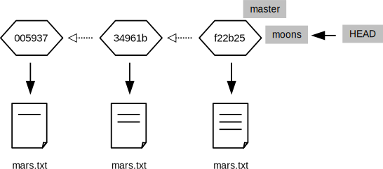

Branching in Git
Here's where we are right now:
$ git log
commit 005937fbe2a98fb83f0ade869025dc2636b4dad5
Author: Vlad Dracula <vlad@tran.sylvan.ia>
Date: Thu Aug 22 10:14:07 2013 -0400
Thoughts about the climate
commit 34961b159c27df3b475cfe4415d94a6d1fcd064d
Author: Vlad Dracula <vlad@tran.sylvan.ia>
Date: Thu Aug 22 10:07:21 2013 -0400
Concerns about Mars's moons on my furry friend
commit f22b25e3233b4645dabd0d81e651fe074bd8e73b
Author: Vlad Dracula <vlad@tran.sylvan.ia>
Date: Thu Aug 22 09:51:46 2013 -0400
Starting to think about Mars
$ cat mars.txt
Cold and dry, but everything is my favorite color
The two moons may be a problem for Wolfman
But the Mummy will appreciate the lack of humidity
We can draw the history of the repository like this
(we'll see in a second why there's a box called master):

Let's run this command:
$ git branch moons
It appears to do nothing,
but behind the scenes it has created a new branch called moons:
$ git branch
* master
moons

Git is now maintaining two named bookmarks in our history:
master,
which was created automatically when we set up the repository,
and moons,
which we just made.
They both point to the same revision right now,
but we can change that.
Let's make moons the active branch:
$ git checkout moons
Switched to branch 'moons'
$ git branch
master
* moons

Our file looks the same:
$ cat mars.txt
Cold and dry, but everything is my favorite color
The two moons may be a problem for Wolfman
But the Mummy will appreciate the lack of humidity
because it is the same: Let's add another line to it:
$ echo "Maybe we should put the base on one of the moons instead?" >> mars.txt
and add an entirely new file:
$ echo "Phobos is larger than Deimos" > moons.txt
$ ls
mars.txt moons.txt
Git now tells us that we have one changed file and one new file:
$ git status
# On branch moons
# Changes not staged for commit:
# (use "git add <file>..." to update what will be committed)
# (use "git checkout -- <file>..." to discard changes in working directory)
#
# modified: mars.txt
#
# Untracked files:
# (use "git add <file>..." to include in what will be committed)
#
# moons.txt
no changes added to commit (use "git add" and/or "git commit -a")
Let's add and commit those changes
(the -A flag to git commit means "add everything"):
$ git add -A
$ git status
# On branch moons
# Changes to be committed:
# (use "git reset HEAD <file>..." to unstage)
#
# modified: mars.txt
# new file: moons.txt
#
$ git commit -m "Thinking about the moons"
[moons 62e7791] Thinking about the moons
2 files changed, 2 insertions(+)
create mode 100644 moons.txt
Our repository is now in the state shown below:
The moons branch has advanced to record the changes we just made,
but master is still where it was.
If we switch back to master:
$ git checkout master
our changes seem to disappear:
$ ls
mars.txt
$ cat mars.txt
Cold and dry, but everything is my favorite color
The two moons may be a problem for Wolfman
But the Mummy will appreciate the lack of humidity
They're still in the repository—they're just not in
the revision that master is currently pointing to.
In essence,
we've created a parallel timeline that shares some history with the original one before diverging.
Let's make some changes in the master branch to further illustrate this point:
$ echo "Should we go with a classical name like Ares Base?" > names.txt
$ git status
# On branch master
# Untracked files:
# (use "git add <file>..." to include in what will be committed)
#
# names.txt
nothing added to commit but untracked files present (use "git add" to track)
$ git add names.txt
$ git commit -m "We will need a cool name for our secret base"
[master dfcf908] We will need a cool name for our secret base
1 file changed, 1 insertion(+)
create mode 100644 names.txt
Our repository is now in this state:

master and moons have both moved on from their original common state,
but in different ways.
They could continue independent existence indefinitely,
but at some point we'll probably want to merge our changes.
Let's do that now:
$ git branch
* master
moons
$ git merge moons
When we run the git merge command,
Git opens an editor to let us write a log entry about what we're doing.
The editor session initially contains this:
Merge branch 'moons'
# Please enter a commit message to explain why this merge is necessary,
# especially if it merges an updated upstream into a topic branch.
#
# Lines starting with '#' will be ignored, and an empty message aborts
# the commit.
If we notice that something is wrong and decide not to complete the merge,
we must delete everything in the file—Git interprets an empty log message to mean,
"Don't proceed."
Otherwise,
everything that isn't marked as a comment with # will be saved to the log.
In this case,
we'll stick with the default log message.
When we save the file and exit the editor, Git displays this:
Merge made by the 'recursive' strategy.
mars.txt | 1 +
moons.txt | 1 +
2 files changed, 2 insertions(+)
create mode 100644 moons.txt
We now have all of our changes in one place:
$ ls
mars.txt moons.txt names.txt
and our repository looks like this:

We can ask Git to draw a diagram of the repository's history with this command:
$ git log --oneline --topo-order --graph
* e0cf8ab Merge branch 'moons'
|\
| * 62e7791 Thinking about the moons
* | dfcf908 We will need a cool name for our secret base
|/
* 005937f Thoughts about the climate
* 34961b1 Concerns about Mars's moons on my furry friend
* f22b25e Starting to think about Mars
This ASCII art is fine for small sets of changes, but for anything significant, it's much better to use a GUI that can draw graphs using lines instead of characters.
Branching strikes most newcomers as unnecessary complexity, particularly for single-author projects. After all, if we need to make some changes to a project, what do we gain by creating parallel universes?
The answer is that branching makes it easy for us to concentrate on one thing at a time. Suppose we are part-way through rewriting a function that calculates spatial correlations when we realize that the task would be easier if our file I/O routines always stored things as complex numbers. Most people would put the spatial correlation changes aside, change the file I/O, then (hopefully) come back to the original task.
The problem with this is that we have to remember what we were doing, even if we realize halfway through rewriting file I/O that we should also rewrite our error handling. It's quite common to wind up with half a dozen tasks stacked on top of one another, and quite hard to them all straight. Branching allows us to put what we're doing in a safe place, solve the new problem, then resume our earlier work.
In practice,
most developers never make changes directly in the master branch.
Instead,
they create a new branch from it for every change they want to make,
then merge those branches back to master when the work is complete.
Returning to our hypothetical example,
we would:
- create a branch called something like
better-spatial-correlationfor those changes; - go back to master and create another branch called
file-input-produces-complex-valuesfor those changes; - merge
file-input-produces-complex-valuesintomaster; - merge
masterintobetter-spatial-correlation; and - finish work on the spatial correlation function and merge it all back into
master.
And if,
partway through this process,
our supervisor asked us to change the graph-plotting routines to conform to the university's new style guide,
we would simply switch back to master,
create a branch for that,
make the changes,
produce the desired graphs,
and leave the changes parked in that branch until we were ready to merge them.